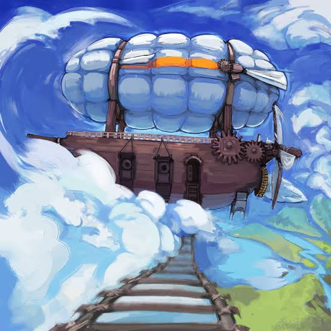

Create Aeronautics expands on the systems of Create to enable players to build all types of vehicles and physics contraptions using Sable. It features content and blocks for building anything from planes, drones, and hot-air balloons, to cars, trucks, and whimsical gizmos.
Description